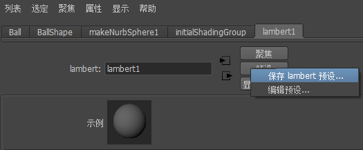
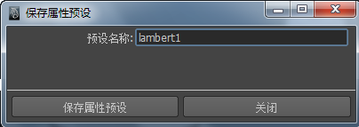
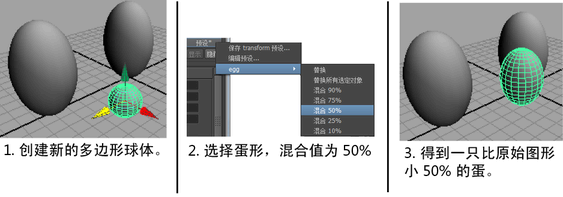

使用“属性编辑器”(Attribute Editor)可以保存并重新应用预设。预设是属性设置的集合，它可以从一个节点保存并重新应用于任意数量的其他节点。
这允许存储复杂的节点设置，例如具有希望保存的属性值的灯光库设置。
Maya 附带了不同节点的多种预设，如流体。
创建预设
- 在“属性编辑器”(Attribute Editor)中打开希望从其获取预设的节点。
- 在“属性编辑器”(Attribute Editor)中，单击“预设”(Presets)（节点名称右侧），然后从弹出菜单中选择“保存(预设类型)预设”(Save (preset type) Preset)。


- 键入新预设的名称并单击“保存属性预设”(Save Attribute Preset)。
如果预设已经存在，则系统会提示覆盖或用其他名称进行保存。
将预设应用到另一个节点
- 在“属性编辑器”(Attribute Editor)中打开要应用预设的节点。
- 在“属性编辑器”(Attribute Editor)中，单击“预设”(Presets)（节点名称右侧）以显示弹出菜单，选择需要的预设名称，然后选择要应用预设的子选项。
可以用预设中的值替换当前的属性值，或将预设值和当前值融合在一起。

注释
- 预设并不保存至其他节点的连接（如纹理贴图）。应用预设不会覆盖至其他节点的连接。
- Maya 将预设以可编辑 MEL 脚本的形式保存在主 Maya 应用程序文件夹中的 presets 文件夹内。不同节点类型的预设保存在 presets 文件夹中的不同文件夹内。
预设按钮灰显情况下的疑难解答
某些节点类型不能另存为预设。例如，形状节点作为预设是有意义的。